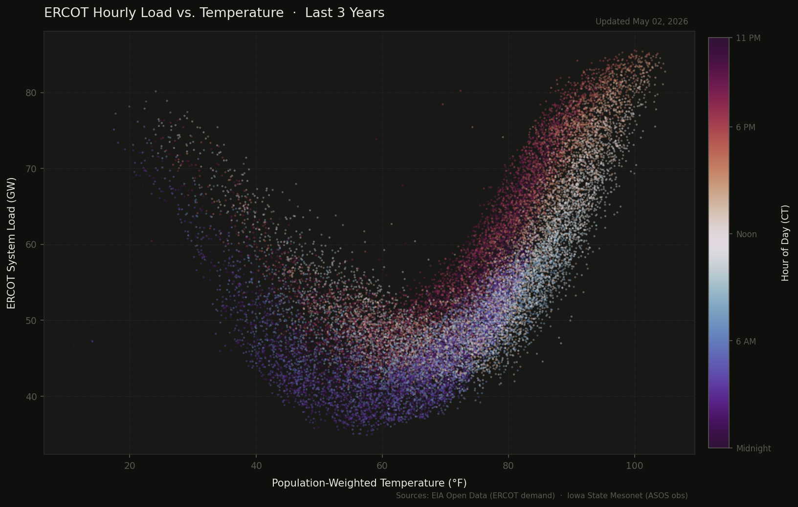
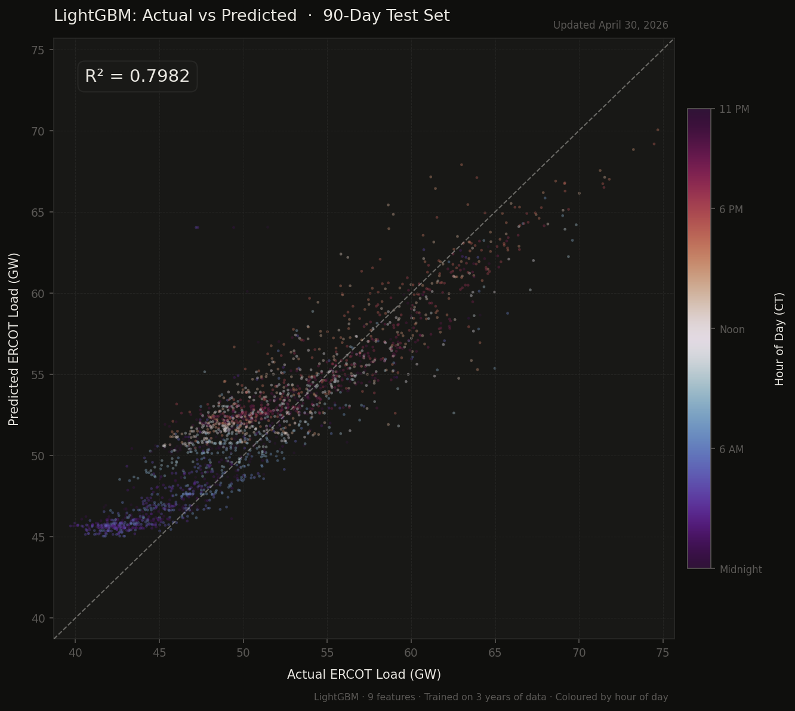

Charts & Analysis
Automated daily plots at the intersection of meteorology and energy markets. Built with Python and updated every morning via GitHub Actions.
Updated daily · 9am CT
ERCOT Load vs. Temperature
Hourly ERCOT system demand plotted against a population-weighted average temperature across Texas, colored by hour of day. The characteristic U-shaped curve reflects heating and cooling demand on either side of the thermal neutral point (~65°F).

Load–Temperature Curves by Hour
A cubic polynomial fitted independently to each of the 24 hours of the day, revealing how the load-temperature relationship evolves from the flat, low overnight hours through the steep afternoon peak. The spread between curves at any given temperature reflects diurnal demand variability independent of weather.
